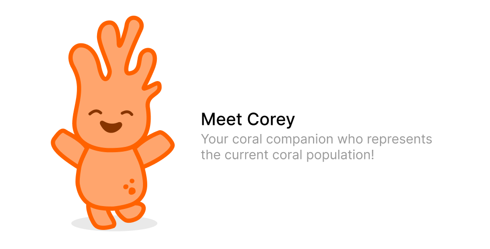
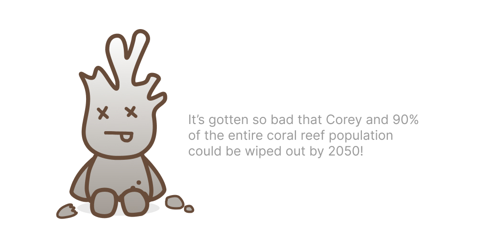
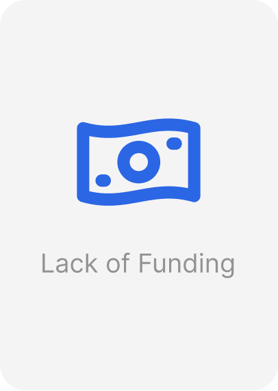
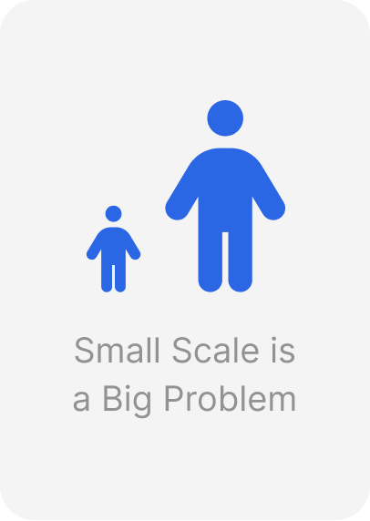
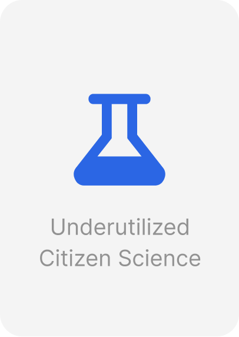
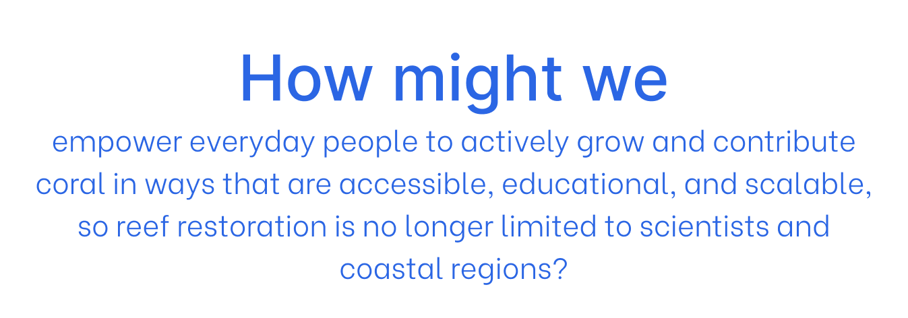

Coral Keepers
Case Study
Overview
When more than 90% of all coral reefs are expected to die by 2050 a change needs to be put in place...
Introducing Coral Keepers, a classroom-ready coral growing system that combines a reef tank with real time information on its health with structured curriculum to bring coral restoration into schools. By partnering with coastal marine research organizations, the system gives students and educators the tools and knowledge to actively participate in rebuilding the world's reefs, building a new generation equipped and motivated to protect our oceans.
My Role
The coral are dying!!!
Current coral restoration efforts rely heavily on specialized scientists, limited funding, and localized nurseries, restricting the scale and speed of recovery.



Where does our problem start?
Through primary and secondary research, we were able to identify three main areas of concern in 10 weeks.




A platform that turns awareness into action
Describe the main product experience, key features, and how the interface supports conservation goals.
Insert final mockups, flows, or feature breakdowns when ready.